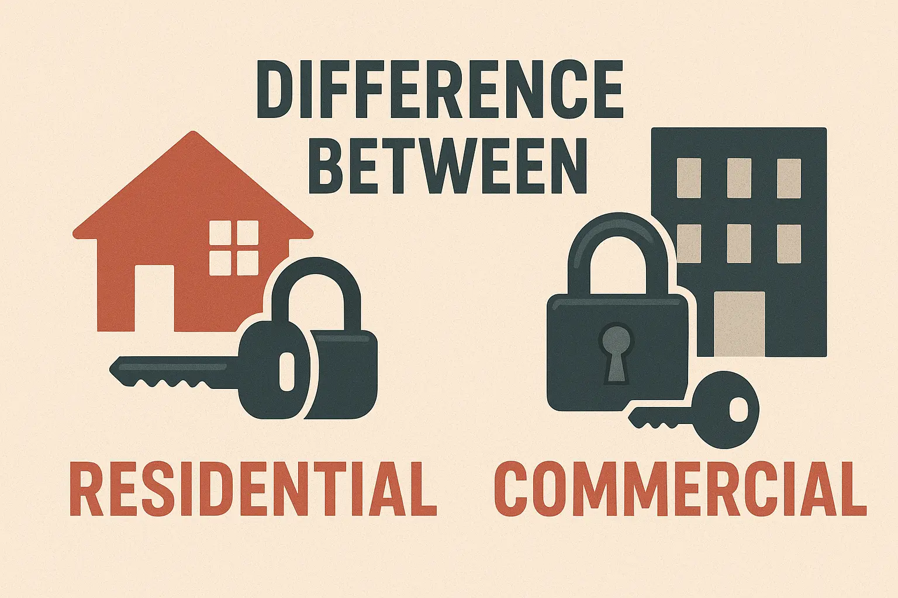

"Can't I just use a residential lock on my business door? It's cheaper." I hear this question at least once a week. The short answer is no—and I've seen the expensive consequences when business owners try it. After 20 years installing both types, I can tell you the differences go far beyond price. Let me show you what really separates commercial and residential locks, using real examples from jobs I've completed.
Critical Insurance Warning
Before we dive in, here's something crucial: Using residential-grade locks on commercial properties can void your business insurance coverage. I've witnessed three business owners in St. George and New Dorp get denied theft claims because their insurance adjusters found residential locks installed on commercial doors. The "savings" cost them tens of thousands of dollars.
Real Case Study: When Residential Locks Failed a Business
The $8,400 Mistake: Retail Store Break-In
March 2024Business Situation:
- Small retail shop in Port Richmond
- Owner installed Kwikset residential deadbolt to save money
- Store averaged 50-80 customer entries per day
- Lock installed for only 8 months before failure
What Happened:
- Internal mechanism wore out from heavy use
- Bolt wouldn't fully extend after 6 months
- Thief noticed weak lock, forced entry easily
- Insurance denied claim—residential lock on commercial door
Financial Impact:
Direct Losses:
- • Stolen merchandise: Significant loss
- • Register cash: Notable amount
- • Door repair: Professional service needed
- • Insurance deductible paid with no reimbursement
Indirect Costs:
- • 2 days closed for repairs: Lost revenue
- • Emergency commercial lock installation
- • Higher insurance premiums going forward
- • Total estimated impact: $8,400+
The Proper Solution:
I replaced the failed residential lock with a Schlage L9000 series commercial-grade mortise lock. Here's what changed:
- Grade 1 ANSI certification: Built for 800,000+ cycles vs residential 200,000
- Hardened steel components: Drill-resistant cylinder, anti-pry plate
- Insurance compliance: Meets NYC commercial building codes
- 18 months later: Still functioning perfectly with no wear issues
Owner's investment in proper commercial lock: Professional-grade pricing. Cost of not doing it initially: $8,400+ in losses and denial of insurance claim. The "expensive" commercial lock was actually the economical choice.
The 5 Critical Differences That Actually Matter
After installing thousands of both types, these are the differences that genuinely impact performance, longevity, and security:
1 Durability: Cycle Life Differences Are Massive
The single biggest difference isn't security—it's how many times you can lock and unlock before failure. Here's what I've observed in real-world use:
Grade 1 Commercial
Operating cycles before wear. Typical examples: Schlage L9000, Medeco Maxum
Real-world lifespan in high-traffic business: 15-20+ years
Grade 1 Residential
Operating cycles. Examples: Schlage B60, Kwikset 980
Real-world lifespan in typical home: 20-30 years (but fails in months on commercial door)
Grade 3 Residential
Operating cycles. Examples: Basic Kwikset, entry-level Yale
Real-world lifespan: Adequate for low-use residential, fails quickly in any commercial setting
Real-World Translation:
- • Busy restaurant door (200 daily cycles): Commercial lock lasts 10+ years, residential fails in 2-6 months
- • Office building (50 daily cycles): Commercial lock lasts 40+ years, residential shows wear in 1-2 years
- • Home front door (5 daily cycles): Even budget residential lock lasts 100+ years theoretically
2 Build Quality: Material Differences You Can Feel
When you handle both types daily like I do, you immediately notice the weight difference. Here's what's actually inside:
Commercial-Grade Components
- Thicker gauge steel: 14-16 gauge vs 18-20 gauge residential
- Hardened steel components: Bolt, cylinder housing, strike plate
- Brass internal pins: Won't corrode, maintain precision over decades
- Heavy-duty springs: Stainless steel, maintain tension indefinitely
- Reinforced housing: Won't flex under force, maintains alignment
Residential-Grade Components
- Lighter materials: Cost-effective for lower usage patterns
- Zinc or brass-plated steel: Adequate for home environment
- Nickel-silver pins: Work fine with occasional use
- Standard springs: Sufficient for home door frequency
- Thinner housing: Lighter weight, easier installation for homeowners
My observation: A quality commercial lock (like Schlage L-series) weighs 2-3 times what a residential deadbolt weighs. That extra weight is hardened steel and brass—materials that prevent wear and forced entry. You're literally holding more security in your hand.
3 Security Features: More Than Just Pin Count
Yes, commercial locks typically have 6-7 pins vs 5 pins in residential, but that's actually one of the smaller differences. Here's what genuinely matters:
Attack Resistance
Commercial Standards:
- • Drill-resistant hardened steel plates
- • Pick-resistant pin configurations
- • Bump-resistant technology (Medeco, Mul-T-Lock)
- • Reinforced strike boxes (4-7" screws into studs)
- • Anti-pry shields on cylinders
Residential Standards:
- • Basic anti-drill pins (higher-end models)
- • Standard pin tumblers (adequate for most homes)
- • SmartKey or bump-resistant options available
- • Standard strike plates (1-3" screws)
- • Decorative escutcheons (aesthetic focus)
Fire Code & Life Safety Compliance
This is huge for commercial but irrelevant for residential. Commercial locks must allow emergency egress:
- Panic devices: Required on public assembly exits, allows exit without key
- Fail-safe vs fail-secure: Electronic locks must unlock during power failure (fire alarm integration)
- Single-action egress: One motion to exit, no keys or tools required from inside
Access Control Integration
Commercial locks are designed to work with sophisticated access control systems:
Commercial Capabilities:
- • Master key system compatibility (multi-level hierarchies)
- • Card reader/keypad integration
- • Scheduled access (automatic lock/unlock times)
- • Audit trails (who accessed when)
- • Remote lock/unlock capabilities
Residential Capabilities:
- • Smart locks (WiFi/Bluetooth)
- • Temporary access codes for guests
- • Smartphone app control
- • Basic activity logs
- • Voice assistant integration
4 Installation Complexity: DIY vs Professional Required
This is where many business owners underestimate the difference. Residential lock installation is designed for homeowner DIY. Commercial isn't.
Commercial Installation Challenges:
- Mortise locks: Require routing large cavity in door (1" deep, 4" wide)
- Precise door prep: Multiple measurements, drilling, chiseling required
- Reinforcement needs: May require door stiffening, frame reinforcement
- Code compliance: Must meet ADA, fire codes, building codes
- Keying complexity: Master key systems require professional pinning
- Documentation: Fire marshal may require installation certificates
Average installation time for experienced locksmith: 1.5-3 hours per door
Residential Installation Simplicity:
- Cylindrical deadbolts: Two holes drilled (2-1/8" face, 1" edge)
- Standard templates: Most locks include paper drilling guide
- Minimal reinforcement: Usually just 3" strike plate screws
- No code issues: Residential codes are simpler, less stringent
- Simple keying: All locks keyed same (optional) or separately
- DIY-friendly: Average homeowner can install in 30-60 minutes
Professional installation still recommended, but genuinely doable DIY
5 Investment Differences: Total Cost of Ownership
Yes, commercial locks cost more upfront—but when you factor in lifespan, replacement costs, and insurance implications, the math changes dramatically. Here's the reality from my experience:
Hardware Investment Ranges
Commercial-Grade Options:
- Basic commercial deadbolt Professional-grade investment
- Grade 1 mortise lock Premium commercial pricing
- High-security (Medeco, Mul-T-Lock) Maximum security investment
- Panic devices/exit hardware Life-safety equipment costs
- Electronic access control systems Enterprise-level pricing per door
Residential-Grade Options:
- Standard deadbolts Budget-friendly pricing
- Smart locks Moderate convenience investment
- High-security residential Premium home security
- Decorative handlesets Style-focused pricing range
- Entry-level basic locks Most affordable option
Total Cost of Ownership Analysis (10-Year Period)
Based on my experience with hundreds of installations, here's what actually costs less over time:
Commercial Lock on Business Door:
- • Initial professional-grade investment
- • Professional installation (required)
- • Zero replacements in 10-15+ years
- • Minimal maintenance costs
- • Insurance compliant (no denied claims)
- 10-year cost: Initial investment only
Residential Lock on Business Door:
- • Lower initial purchase cost
- • DIY or professional installation
- • Replacement every 6-24 months (high traffic)
- • Frequent repairs and adjustments
- • Insurance violation risk
- 10-year cost: 4-15x replacements + potential insurance denial
Top Lock Brands: What I Actually Install and Recommend
After 20 years, I've installed thousands of locks from dozens of manufacturers. These are the brands I trust and why—based on real long-term performance, not marketing claims:
Commercial Lock Brands
Schlage Commercial (L, ND, CO Series)
Top ChoiceMy go-to for 70% of commercial jobs in Staten Island. Excellent balance of security, durability, and serviceability. I've got Schlage L9000 mortise locks I installed 18 years ago still functioning perfectly in high-traffic restaurants.
Best For:
- • Retail stores and office buildings
- • Schools and government facilities
- • Restaurants and high-traffic businesses
- • Any business needing Grade 1 security
Key Features:
- • ANSI Grade 1 certified (800,000+ cycles)
- • Wide range of functions and finishes
- • Master key system compatible
- • Excellent parts availability for service
Real observation: In 20 years, I've replaced exactly three Schlage commercial locks due to wear—all were in 24/7 facilities with extreme usage (200+ daily cycles). Standard businesses? They outlast the business itself.
Medeco (Maxum, X4, M3)
Maximum SecurityWhen a business truly needs high-security—jewelry stores, pharmacies, cannabis dispensaries, data centers—I spec Medeco. The patented key control is genuine: customers literally cannot get unauthorized duplicates made. I've never seen a Medeco lock successfully picked or bumped in the field.
Best For:
- • Jewelry stores and pharmacies
- • Cannabis dispensaries (legal requirement some areas)
- • Data centers and secure facilities
- • Anywhere key control is critical
Key Features:
- • Patented key control (no unauthorized duplication)
- • UL 437 listed for burglary resistance
- • Medeco3 technology (rotating pins)
- • Military and government approved
Real cost note: Medeco is premium-priced, but for high-security commercial applications, the investment is justified. Key cards for authorized duplication provide genuine security that pays for itself.
Mul-T-Lock (MT5+, Interactive+)
Another excellent high-security option, particularly popular in NYC. The telescoping pin technology is genuinely pick-resistant. I install these when customers want high-security but prefer the Mul-T-Lock key design over Medeco.
- Interactive+ technology: Telescoping pins provide multiple security layers
- Key control: Patented keyway prevents unauthorized duplication
- Integration: Works with comprehensive access control platforms
Yale Commercial (8800, AU4600 Series)
Yale has been making locks since 1840, and their commercial line upholds that heritage. Solid Grade 1 performance, competitive pricing. I use Yale when budgets are tighter but Grade 1 certification is still required.
- 8800 Series mortise locks: ANSI Grade 1, excellent for standard commercial use
- AU4600 cylindrical locks: Heavy-duty for high-traffic applications
- Nextouch™ solutions: Keyless electronic options for modern businesses
Residential Lock Brands
Schlage Residential (B60, Encode, Sense)
Best OverallSchlage dominates residential for good reason: their B60 deadbolt is Grade 1 residential (equivalent security to lower-end commercial), costs reasonably, and lasts decades. I install more Schlage residential than all other brands combined.
Best Models:
- • B60/B560 deadbolt (mechanical, Grade 1)
- • Encode WiFi (smart lock, no hub needed)
- • Sense (Apple HomeKit compatible)
- • Latitude handlesets (entry door sets)
Why Homeowners Love Them:
- • Grade 1 security at reasonable cost
- • Beautiful finishes that last
- • Easy rekeying when needed
- • Available everywhere for easy replacement
Kwikset (SmartKey, Halo, Premis)
Best InnovationKwikset's SmartKey technology is genuinely innovative—homeowners can rekey their own locks in 15 seconds without a locksmith. For rental properties or homes where keys change hands frequently, it's brilliant. The Halo Touch with fingerprint reader is also impressive for tech-forward homeowners.
Signature Features:
- • SmartKey Security™ (rekey without locksmith)
- • Halo Touch (WiFi + fingerprint reader)
- • BumpGuard™ protection
- • Most affordable quality brand
Best For:
- • Rental properties (easy rekeying)
- • Budget-conscious homeowners
- • Smart home enthusiasts
- • Families wanting convenience
Honest assessment: Kwikset's build quality isn't quite Schlage-level, but for typical residential use, they're completely adequate and the SmartKey feature is genuinely useful. I've installed hundreds without issues.
Yale Residential (Assure Lock, Real Living)
Yale brings their heritage to homes with solid mechanical locks and impressive smart lock options. The Assure Lock 2 with WiFi is one of the better smart locks I've installed—reliable connectivity, good battery life, sleek design.
- Assure Lock 2: WiFi + Bluetooth, works with all major smart home platforms
- DoorSense™ technology: Knows if door is open or closed (rare feature)
- Traditional deadbolts: Solid mechanical options for non-smart preference
How to Choose: Practical Decision Framework
After reviewing thousands of security needs across Staten Island, here's my straightforward framework for choosing the right lock:
For Commercial Properties
Step 1: Assess Your Traffic Volume
- High traffic (100+ daily uses): Grade 1 commercial lock required (Schlage L-series, Medeco Maxum)
- Moderate traffic (20-100 daily): Grade 1 commercial still recommended (better longevity, insurance compliance)
- Low traffic private office (<20 daily): Grade 1 commercial or high-grade residential (Grade 1 B60 Schlage acceptable)
Step 2: Evaluate Your Security Needs
Basic Security:
- • Standard office/retail
- • No high-value inventory
- • Normal theft risk
- → Schlage ND or L-series
Enhanced Security:
- • Some valuable inventory
- • Higher theft concern
- • Need key control
- → Medeco M3 or Mul-T-Lock MT5
Maximum Security:
- • Jewelry, pharmacy, dispensary
- • Critical data/assets
- • Insurance requirements
- → Medeco X4 or Mul-T-Lock Interactive+
Step 3: Check Code Requirements
- Public assembly areas: Panic devices required by fire code (restaurants, retail, schools)
- ADA compliance: Ensure hardware meets accessibility standards (lever handles, proper force)
- Fire marshal approval: Some occupancies require approved hardware lists
- Insurance requirements: Check policy for specific lock grade or brand requirements
For Residential Properties
Step 1: Consider Your Neighborhood
- Low-crime area: Standard Grade 2 deadbolt adequate (Kwikset, mid-range Yale)
- Average area: Grade 1 residential recommended (Schlage B60, upper Kwikset)
- Higher-crime area: Grade 1 plus reinforced strike (Schlage B60 + 4" screws into studs)
Step 2: Decide on Smart Features
Choose Smart Lock If:
- ✓ You want remote access/control
- ✓ Frequent guests/contractors need access
- ✓ You have smart home system already
- ✓ Family members lose keys often
- ✓ You want access logs/notifications
Best options: Schlage Encode (WiFi, no hub), Kwikset Halo Touch (fingerprint), Yale Assure Lock 2
Choose Mechanical Lock If:
- ✓ You prefer simplicity/reliability
- ✓ No need for remote access
- ✓ Concerned about battery replacement
- ✓ Want lowest maintenance
- ✓ Maximum longevity priority
Best options: Schlage B60, Kwikset 980, Yale traditional deadbolts
Step 3: Factor in Key Management Needs
- Rental property: Kwikset SmartKey (tenant can't copy, you can rekey instantly between tenants)
- Single family home: Any quality brand works, match all exterior doors to same key
- Multi-family house: Consider smart locks for easy code management per unit
Professional Installation: Why It Matters
I've fixed hundreds of DIY lock installations over the years. While residential locks are genuinely DIY-friendly, there are common mistakes that compromise security. Commercial locks absolutely require professional installation. Here's what proper installation includes:
Commercial Installation Essentials
- Proper door prep: Mortise cavity routed to exact specifications (fraction of inch matters)
- Frame reinforcement: Strike box properly anchored into studs, not just frame
- Proper alignment: Bolt must engage strike cleanly without binding (prevents premature wear)
- Master keying: Pins must be configured correctly for hierarchical access
- Code compliance verification: Function, handing, ADA requirements all confirmed
- Documentation: Record of keying, installation certificate for fire marshal if needed
Average commercial installation by our experienced team: 1.5-3 hours depending on door condition and lock complexity. DIY attempts I've had to fix: 6-12 hours of frustration with improper results.
Residential Installation Best Practices
- Proper hole sizing: 2-1/8" face hole, 1" edge hole (template provided with lock)
- Strike plate reinforcement: Use provided 3" screws into framing, not just trim
- Backset verification: Measure door thickness, ensure correct backset (2-3/8" or 2-3/4")
- Smooth operation: Bolt should extend/retract without resistance (adjust if needed)
- Matching locks: Rekey all locks to same key for convenience
- Smart lock setup: WiFi configuration, app setup, code programming if applicable
While DIY is possible for residential, professional installation ensures: proper reinforcement (many DIYers skip this), perfect alignment (prevents binding/wear), and all locks keyed same for convenience.
Get Expert Lock Selection & Installation
After 20 years and thousands of installations across Staten Island, I can help you choose exactly the right lock for your specific needs—whether it's a commercial property in St. George or your family home in Great Kills. I work with all the major brands—Schlage, Medeco, Yale, Kwikset, Mul-T-Lock—and provide honest advice based on real performance, not sales quotas.
Free on-site assessment and recommendation based on your actual needs, not upsells
Proper installation with code compliance, reinforcement, and warranty protection
We stock and service Schlage, Medeco, Yale, Kwikset, Mul-T-Lock—whatever fits best
Related Security Guides
Commercial Security Tips for Staten Island
Comprehensive security strategies for businesses based on 300+ security assessments.
Read Guide →Smart Locks Guide for Staten Island
Everything you need to know about smart locks for homes and businesses.
Read Guide →Lock Maintenance Guide
Professional tips to extend the life of your commercial and residential locks.
Read Guide →